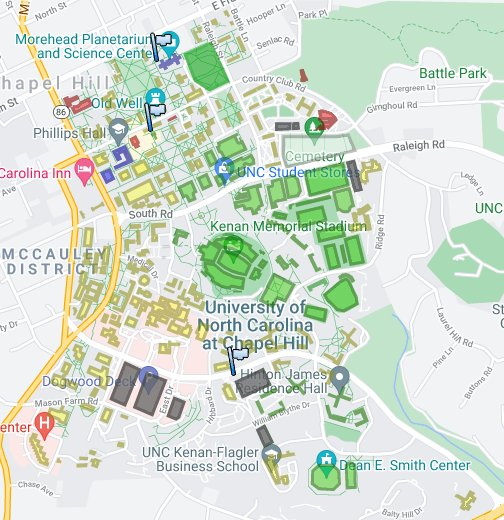

The first tip in surviving in college is knowing where your classes are. Here is the map of UNC campus , know it like the back of your hand (at least where your classes are)
Or be a true "Gen Z" child and use an app to get around. But if you trip on the bricks from staring at your phone thats on you
The second tip is READ THE SYLLABUS
It feels like reading the terms and conditions of a IOS update I know,but it is necessary. All the due dates and little things that might sneak up on you are in here. Plus professors hate it if they have to repeat info you can find yourself.
The third tip is GO to office hours!
This is something that most students dont do until its too late. The truth is, going to office hours has many benefits. You get to understand different topics especially how it all fits together. It makes the assignmenys easier. you also get tips on how to study for big exams.
The fourth tip is FORM A STUDY GROUP!
It might be scary having to speak others in class. However, its worth it. Finding a group to study with helps you by having others that hold you accountable for learning information. It also makes it easier to study for exams. you get to listen to multiple perspectives and also see what works for them in that class.
The last tip is ORGANIZE. ORGANIZE. ORGANIZE.
College is all about Time-management. Having a planner is essential. Being able to organize your day will help you not waste time. It also helps you realize what you should be studying each day.